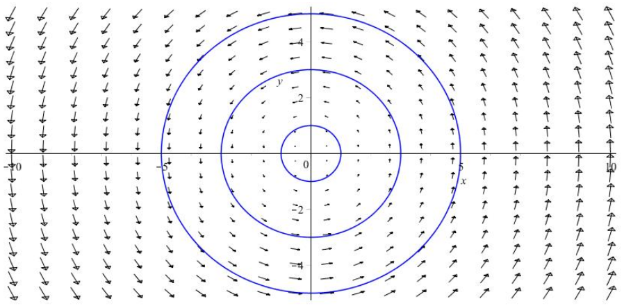

Pour les articles : voir ici

Post-doc
Travaux en collaboration avec Aziz Hamdouni, sur les liens entre géométrie différentielle et mécanique. C’est en particulier les symétries de Lie généralisées et les Théorèmes de Noether qui ont été au centre de ce post-doc pour la construction de schéma numérique robuste.
Thèse
Intitulée : Calcul Moulien, Arborification, Symétries et Applications
Directeur de thèse : Jacky Cresson
Soutenue le 25 juin 2018 devant le jury composé par :
- Jacky Cresson : Directeur de thèse, Professeur des Universités au LMAP
- Aziz Hamdouni : Examinateur, Professeur des Universités au LASIE
- Alain Hénaut : Président de jury, Professeur Emérite à l’IMB
- Dominique Manchon : Examinateur, Charge de Recherche CNRS, HDR au LMBP
- Frédéric Menous: Examinateur, Maître de conférence à l’UPS
- Jacques-Arthur Weil : Rapporteur, Professeur des Universités au XLIM
Rapporteurs (non présent pour la soutenance):
- Kurusch Ebrahimi-Fard, Professeur au NTNU
- Frédéric Patras, Directeur de recherche CNRS à l’UNS
Mes travaux de thèse se sont articulés autour de problèmes de systèmes dynamiques continus et discrets reposant sur l’utilisation d’outils algébriques et combinatoires, à savoir le calcul moulien ainsi que l’arborification introduite par Jean Ecalle dans les années 70 et les groupes de symétries pour la géométrie des tissus suivant les travaux d’Alain Hénaut.
Cliquez pour un résumé rapide de chaque partie
Partie 1 : Arborification et calcul moulien
On propose une étude approfondie de l'arborification et ses applications dans les systèmes dynamiques et l'analyse numérique où des séries formelles non commutatives apparaissent. Par le calcul moulien et en lien avec l'arborification, on étudie des problèmes de convergence. Cette approche permet de founir une démonstration complète du Théorème de Brujno de linéarisation analytique (reposant sur la notion d'invariance d'équations fonctionnelles mouliennes). On s'intéresse aussi à la convergence des séries de Butcher et les schémas de Runge-Kutta où le même type de structure algébrique apparaissent (algèbre de Hopf de Connes-Kreimer).
Partie 2 : Démonstration de la version faible de la conjecture de Jarque-Villadelprat
La seconde partie propose une démonstration de la version faible de la conjecture de Jarque-Villadelprat sur la linéairisation de champs de vecteurs Hamiltonien à perturbations polynomiales en degrés quelconques en utilisant la correction de champs de vecteurs introduite par J. Ecalle et B. Vallet. On s'intéresse aussi aux variétés algèbriques isochrones de champs de vecteurs en lien avec certains algèbres de Lie.
Partie 3 : Symétries de Lie et Tissus du plan
La troisième et dernière partie concerne la classification des équations différentielles de degré n du premier ordre en étudiant les tissus associés. Un tissu (ou d-tissu) est la collection de d feuilletages holomorphes de codimension 1. A. Hénaut propose dans ses travaux une lecture de la linéarisation de tels objets dans leur groupe de symétrie qu'il obtient grâce à des moyens algébriques. Nous proposons une autre approche reposant sur les groupes de symétries d'équations différentielles suivant le formalisme de P.J.Olver. Nous ouvrons la discussion aussi sur les relations entre symétries, polynômes de Darboux, modules de dérivations et arrangements de droites.